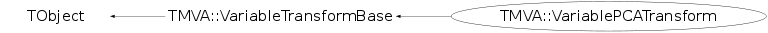

class TMVA::VariablePCATransform: public TMVA::VariableTransformBase
Function Members (Methods)
public:
protected:
| void | TMVA::VariableTransformBase::CalcNorm(const vector<TMVA::Event*,allocator<TMVA::Event*> >&) |
| virtual void | TObject::DoError(int level, const char* location, const char* fmt, va_list va) const |
| Int_t | TMVA::VariableTransformBase::GetNClasses() const |
| UInt_t | TMVA::VariableTransformBase::GetNSpectators() const |
| UInt_t | TMVA::VariableTransformBase::GetNTargets() const |
| UInt_t | TMVA::VariableTransformBase::GetNVariables() const |
| void | TObject::MakeZombie() |
| void | TMVA::VariableTransformBase::SetCreated(Bool_t c = kTRUE) |
| void | TMVA::VariableTransformBase::SetName(const TString& c) |
| void | TMVA::VariableTransformBase::SetNVariables(UInt_t i) |
| vector<TMVA::VariableInfo>& | TMVA::VariableTransformBase::Spectators() |
| vector<TMVA::VariableInfo>& | TMVA::VariableTransformBase::Targets() |
| vector<TMVA::VariableInfo>& | TMVA::VariableTransformBase::Variables() |
Data Members
public:
| enum TObject::EStatusBits { | kCanDelete | |
| kMustCleanup | ||
| kObjInCanvas | ||
| kIsReferenced | ||
| kHasUUID | ||
| kCannotPick | ||
| kNoContextMenu | ||
| kInvalidObject | ||
| }; | ||
| enum TObject::[unnamed] { | kIsOnHeap | |
| kNotDeleted | ||
| kZombie | ||
| kBitMask | ||
| kSingleKey | ||
| kOverwrite | ||
| kWriteDelete | ||
| }; |
protected:
| TMVA::Event* | TMVA::VariableTransformBase::fBackTransformedEvent | holds the current back-transformed event |
| TMVA::DataSetInfo& | TMVA::VariableTransformBase::fDsi | |
| TMVA::DataSetInfo* | TMVA::VariableTransformBase::fDsiOutput | |
| TMVA::VariableTransformBase::VectorOfCharAndInt | TMVA::VariableTransformBase::fGet | get variables/targets/spectators |
| TMVA::MsgLogger* | TMVA::VariableTransformBase::fLogger | ! message logger |
| TMVA::VariableTransformBase::VectorOfCharAndInt | TMVA::VariableTransformBase::fPut | put variables/targets/spectators |
| TMVA::TMVAVersion_t | TMVA::VariableTransformBase::fTMVAVersion | |
| TMVA::Event* | TMVA::VariableTransformBase::fTransformedEvent | holds the current transformed event |
Class Charts
{kind=link}
{kind=link}
{kind=link}
{kind=link}

Function documentation
void Initialize()
initialization of the transformation. Has to be called in the preparation and not in the constructor, since the number of classes it not known at construction, but only after the creation of the DataSet which might be later.
Bool_t PrepareTransformation(const vector<TMVA::Event*,allocator<TMVA::Event*> >& )
calculate the principal components using the ROOT class TPrincipal and the normalization
const TMVA::Event* Transform(const TMVA::Event *const , Int_t cls) const
apply the principal component analysis
const TMVA::Event* InverseTransform(const TMVA::Event *const , Int_t cls) const
apply the principal component analysis
TODO: implementation of inverse transformation
Log() << kFATAL << "Inverse transformation for PCA transformation not yet implemented. Hence, this transformation cannot be applied together with regression. Please contact the authors if necessary." << Endl;
void CalculatePrincipalComponents(const vector<TMVA::Event*,allocator<TMVA::Event*> >& )
calculate the principal components for the signal and the background data it uses the MakePrincipal method of ROOT's TPrincipal class
void X2P(vector<Float_t>& , const vector<Float_t>& , Int_t cls) const
Calculate the principal components from the original data vector x, and return it in p (function extracted from TPrincipal::X2P) It's the users responsibility to make sure that both x and p are of the right size (i.e., memory must be allocated for p)
void P2X(vector<Float_t>& , const vector<Float_t>& , Int_t cls) const
Perform the back-transformation from the principal components pc, and return x It's the users responsibility to make sure that both x and pc are of the right size (i.e., memory must be allocated for p)
void MakeFunction(ostream& fout, const TString& fncName, Int_t part, UInt_t trCounter, Int_t cls)
creates C++ code fragment of the PCA transform for inclusion in standalone C++ class
VariablePCATransform( DataSetInfo& dsi )